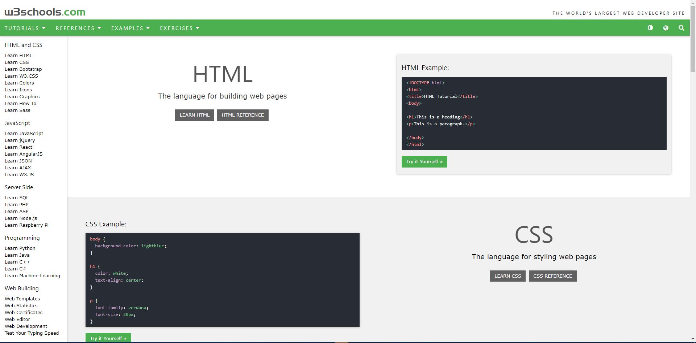
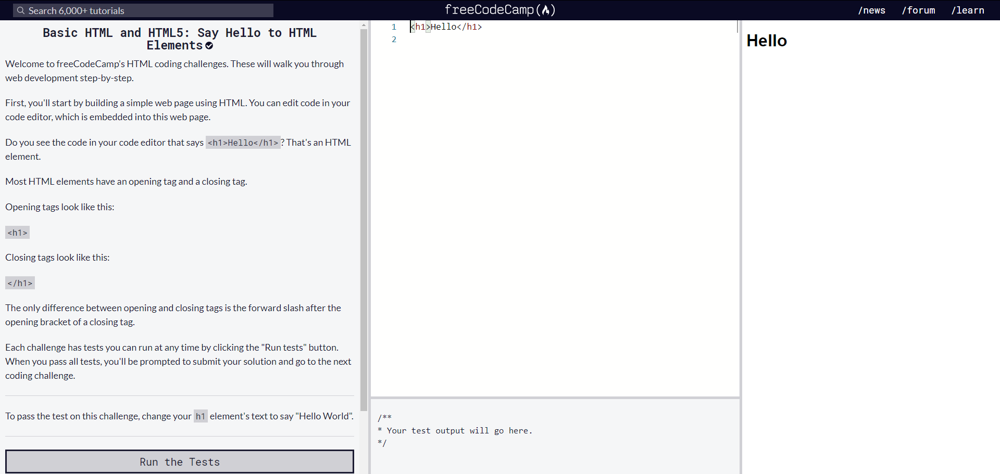

Getting started with Web Development
To begin with you can start by going through a book of html and css.I specially recommend going through practical examples but still I can refer two books for you .
The download link : HTML & CSS by John Duckett

You can go through the book for a while at first if you're totally new about this. Then take a look at w3schools website. There you can find all implemented code snippets and implemented examples.
The next step should be practicing . You gotta practice a lot using either using templates or from totally scartch , this is upto you. For some practice try visiting Free CodeCamp . This is a really productive website to learn by practicing .

Lastly a text editor . I initially used sublime text
But now I'm using Visual Studio Code
So lets get started with web. Wish you all the best !